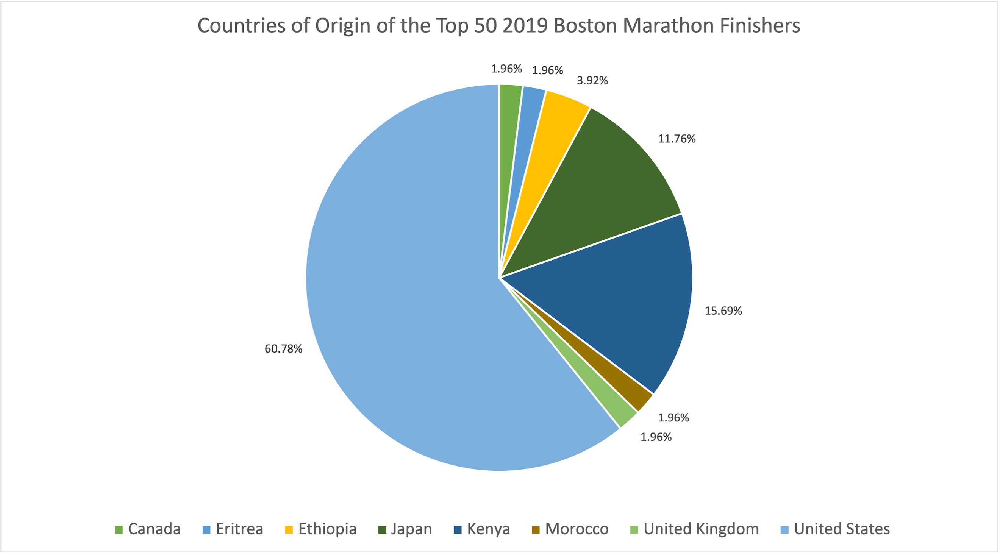

Horizontal line with the electoral vote count to show the viewer how many votes each candidate as received
Channels
Color (hue)
The visual utilizes colors to represent the presidential candidates' political parties (red to represent the republican party and blue to represent the democratic party)
This was a good choice because each color represents a distinct political party so it makes it easy to understand
Position (horizontal)
There is a horizontal line above the map representing electoral votes
This was a good choice because it clearly shows which candidate is winning by having the amount of color on the line surpass the electoral votes needed to win mark. Having it be horizontal also makes it easy to follow right above the corresponding map
Colormap
Categorical
The colormap is categorical because red and blue represent the distinct political parties (democrat and republican)
This was a good choice because red and blue clearly represent the two political parties which the two presidential candidates belong to, so you can easily identfy on the map which states primarily voted for which party. You can also see on the horizontal line you can see which political party was winning based on the color with more electoral votes
Marks
Points
Points representing the scoring value of botted balls
Lines
3 dashes lined which represent fly balls, line drives, ground balls
Channels
Color (saturation)
There is a color scale for the points which represent the scoring value (purple being below average, white being average, and orange being above average)
This was a good choice because it made the visual easy to follow since the purple and orange were two distinct colors which represented below average or above average, respectively. Having the midpoint be white also made the scale easy to follow
Size (length)
The 3 lines are dashed with small widths
This was a good choice because the small dashes faintly go over the graph and don't cover any points but still make the lines distinct
Position (horizontal)
The 3 lines are horizontal in direction
This was a good choice because you can see where the points lie relative to the 3 distinct launch angles at 50 degrees fly balls, 25 degrees line drives, and 10 degrees ground balls which are highlighted
Colormap
Divergent
Ordered ordinal attribute because the purple represents below average, the white represents the midpoint of average, and the orange represents above average. The purple and orange represents the opposite extremes and the white is the neutral color in the middle
This was a good choice because it represents a scale from below average to average to above average where average is the “mid point” and is white in color. It makes the graph very easy to follow with the corresponding legend

Marks
Area
Pie chart represented as a circle with wedges corresponding to each percentage
Channels
Color (hue)
Each country corresponds to a distinct wedge color in the pie chart
This was a good choice because it makes the chart easy to follow and trace back to the corresponding country based on color
Shape
The visual is a circular pie chart representing 100% and each wedge in the circle represents a percentage which all add up to 100%
This was a good choice because, since we were dealing with percentages a pie chart made the most sense to show the proportions
Size (area)
Each wedge size in the pie chart corresponds to its percentage out of 100%
This was a good choice because it shows the proportion of individuals from each country relative to the total number of individuals in the sample data (top 50 finishers)
Colormap(s)
Categorical:
Each color represents a distinct country of origin
This was a good choice because it makes the visual clear and easy to follow with the legend denoting each country's corresponding distinct color on the chart